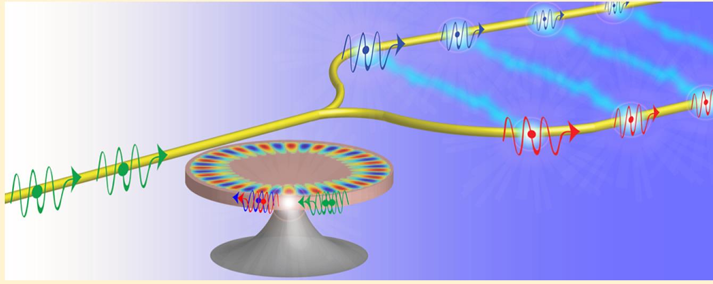

Integrated Quantum Photonics
Advance of quantum optical science in the past few decades has now come to the engineering era of real practical application, which has been witnessed in recent years in the areas of secure communication, metrology, sensing, and potentially future advanced computing. Chip-scale implementation would not only dramatically enhance the complexity and capacity of information processing, but also enable novel functionalities which are otherwise inaccessible in room-wide/table-top experiments. Recent advances in integrated quantum photonics has resulted in intriguing powerful functionalities that start to go beyond the reach of classical computing. Indeed, human beings have already experienced a similar technological advance in the 50s-60s. The technological transformation of electronic processors from a room-wide size down to a chip scale eventually revolutionized our modern society.
Although integrated quantum photonics is only in its infant stage, future advances may bring similar or even more profound impact to our lives in the years to come. Envisioning such potential far-reaching impact, we are dedicated to exploring and developing chip-scale approaches that are capable of generating, processing, storing, and detecting versatile photonic quantum states on a single chip, aiming for broad applications in computing, communication, and sensing, by taking advantage of the intriguing quantum mechanical principles.

We currently develop various quantum photonic functional devices/circuits on various material platforms such as silicon, silicon carbide, and lithium niobate. For example, we developed a chip-scale source of correlated photon pairs produced in a comb fashion with high spectral brightness, long coherence time, and large pair correlation. We produced high-quality energy-time entangled photons and heralded single photons on silicon nanophotonic chips. By integrating novel physical mechanisms, innovative device design, together with advanced nanofabrication technology, we hope to open up a research avenue within integrated quantum photonics that will eventually form fundamental building blocks for a future quantum photonic interconnect.

-
W. C. Jiang, et al, Opt. Express 23, 20884 (2015).
-
S .Rogers, et al, Appl. Phys. Lett. 107, 041102 (2015).
-
X. Lu, et al, ACS Photon. 3, 1626 (2016).
-
S. Rogers, et al, ACS Photon. 3, 1754 (2016).
-
X. Lu, et al, Optica 3, 1331 (2016).
-
R. Luo, et al, Opt. Express 25, 24531 (2017).
-
S. D. Rogers, et al, Comm. Phys.2, 95 (2019).
-
U. A. Javid, et al, Phys. Rev. Appl. 12, 054019 (2019).
-
U. A. Javid, et al, Phys. Rev. A 100, 043811 (2019).